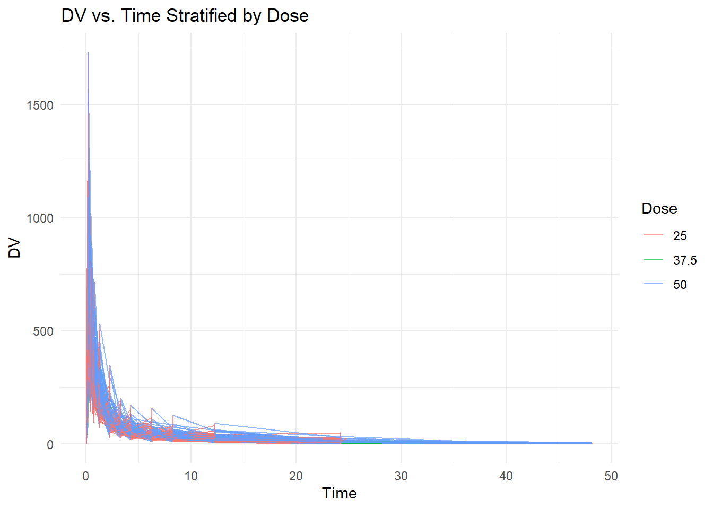
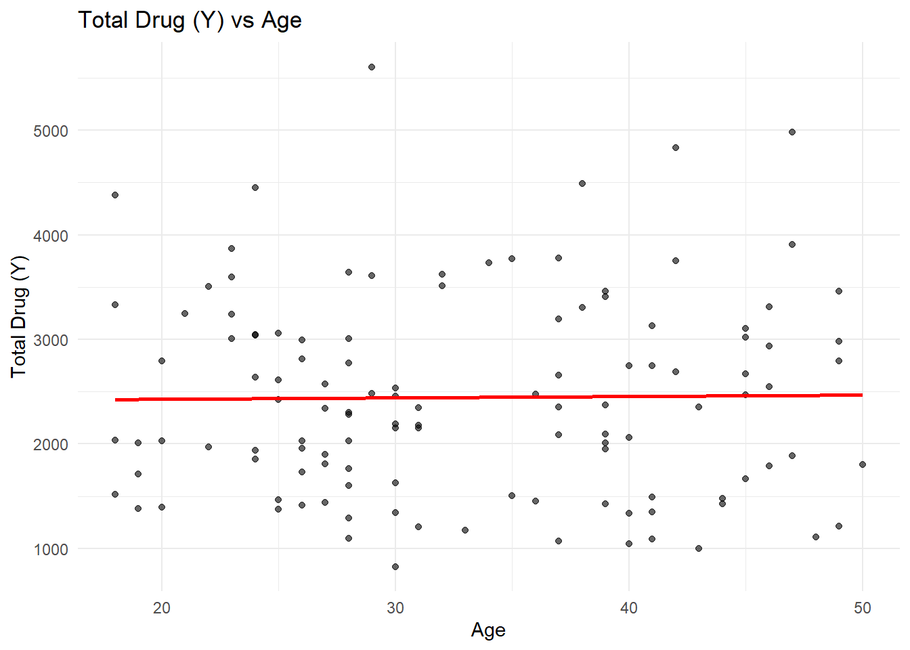
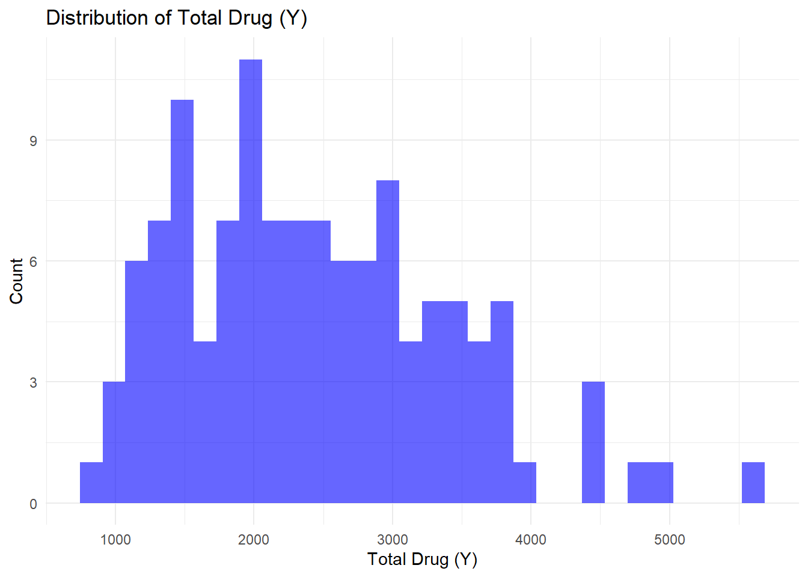
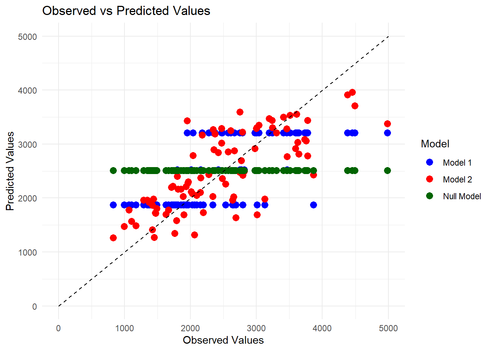
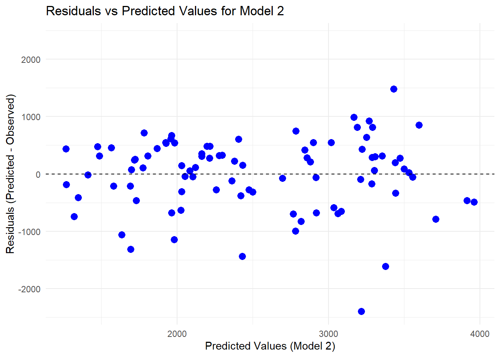
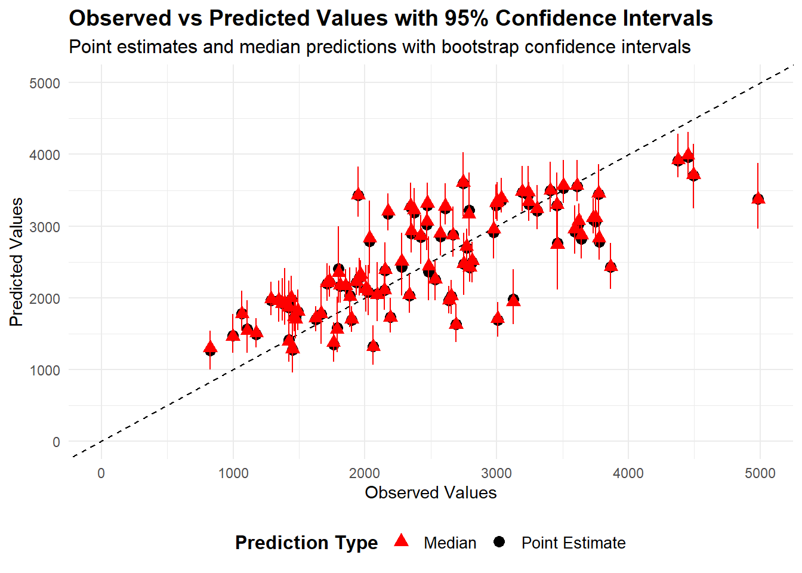
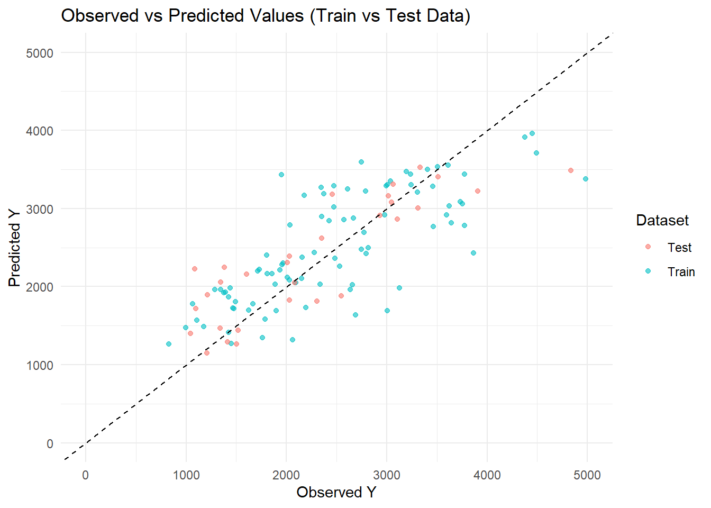

Before performing any analysis, we need to load the dataset into R to ensure we have access to the necessary variables for modeling and exploration. Proper data loading ensures that we are working with the correct file, maintaining the integrity of our analysis.
# path to data# note the use of the here() package and not absolute pathsdata_location <-here("fitting-exercise","Mavoglurant_A2121_nmpk.csv")data <-read_csv(data_location)
Rows: 2678 Columns: 17
── Column specification ────────────────────────────────────────────────────────
Delimiter: ","
dbl (17): ID, CMT, EVID, EVI2, MDV, DV, LNDV, AMT, TIME, DOSE, OCC, RATE, AG...
ℹ Use `spec()` to retrieve the full column specification for this data.
ℹ Specify the column types or set `show_col_types = FALSE` to quiet this message.
# str () give us the overview of the datasetsstr(data)
ID CMT EVID EVI2
Min. :793.0 Min. :1.000 Min. :0.00000 Min. :0.0000
1st Qu.:832.0 1st Qu.:2.000 1st Qu.:0.00000 1st Qu.:0.0000
Median :860.0 Median :2.000 Median :0.00000 Median :0.0000
Mean :858.8 Mean :1.926 Mean :0.07394 Mean :0.1613
3rd Qu.:888.0 3rd Qu.:2.000 3rd Qu.:0.00000 3rd Qu.:0.0000
Max. :915.0 Max. :2.000 Max. :1.00000 Max. :4.0000
MDV DV LNDV AMT
Min. :0.00000 Min. : 0.00 Min. :0.000 Min. : 0.000
1st Qu.:0.00000 1st Qu.: 23.52 1st Qu.:3.158 1st Qu.: 0.000
Median :0.00000 Median : 74.20 Median :4.306 Median : 0.000
Mean :0.09373 Mean : 179.93 Mean :4.085 Mean : 2.763
3rd Qu.:0.00000 3rd Qu.: 283.00 3rd Qu.:5.645 3rd Qu.: 0.000
Max. :1.00000 Max. :1730.00 Max. :7.456 Max. :50.000
TIME DOSE OCC RATE
Min. : 0.000 Min. :25.00 Min. :1.000 Min. : 0.00
1st Qu.: 0.583 1st Qu.:25.00 1st Qu.:1.000 1st Qu.: 0.00
Median : 2.250 Median :37.50 Median :1.000 Median : 0.00
Mean : 5.851 Mean :37.37 Mean :1.378 Mean : 16.55
3rd Qu.: 6.363 3rd Qu.:50.00 3rd Qu.:2.000 3rd Qu.: 0.00
Max. :48.217 Max. :50.00 Max. :2.000 Max. :300.00
AGE SEX RACE WT
Min. :18.0 Min. :1.000 Min. : 1.000 Min. : 56.60
1st Qu.:26.0 1st Qu.:1.000 1st Qu.: 1.000 1st Qu.: 73.30
Median :31.0 Median :1.000 Median : 1.000 Median : 82.60
Mean :32.9 Mean :1.128 Mean : 7.415 Mean : 83.16
3rd Qu.:40.0 3rd Qu.:1.000 3rd Qu.: 2.000 3rd Qu.: 90.60
Max. :50.0 Max. :2.000 Max. :88.000 Max. :115.30
HT
Min. :1.520
1st Qu.:1.710
Median :1.780
Mean :1.762
3rd Qu.:1.820
Max. :1.930
#class() function to check what type of object class(data) # obtaining the type of object
[1] "spec_tbl_df" "tbl_df" "tbl" "data.frame"
3 Data Cleaning
The data cleaning process has been systematically executed with detailed comments added at each step for future reference. This includes removing unnecessary observations (e.g., filtering OCC = 1), excluding dosing entries (TIME = 0) to focus on time-series values, and converting categorical variables (SEX, RACE) into factors for proper analysis. Additionally, missing values were checked and handled, and a summary of the cleaned dataset was generated to ensure data integrity. Each transformation was clearly documented to maintain transparency and facilitate reproducibility.
# Convert necessary variables to factorsdata <- data %>%mutate(ID =as.factor(ID), DOSE =as.factor(DOSE))# Plot: DV vs Time, grouped by ID, stratified by DOSEggplot(data, aes(x = TIME, y = DV, group = ID, color = DOSE)) +geom_line(alpha =0.7) +labs(title ="DV vs. Time Stratified by Dose",x ="Time",y ="DV",color ="Dose" ) +theme_minimal()

# ---------------- Keep only observations where OCC == 1 ----------------# The dataset contains multiple observations per individual, with OCC=1 and OCC=2.# Since we're unsure about the difference, we keep only OCC=1 to maintain consistency.data_filtered <- data %>%filter(OCC ==1) # Retain only records where OCC is equal to 1# ---------------- Remove TIME == 0 and compute total drug exposure ----------------# The dataset includes an entry at TIME = 0 where DV = 0 and AMT is nonzero.# This represents the dosing event, so we exclude these entries for calculating total exposure.# We then sum the DV values for each individual (ID) to estimate drug exposure.Y_data <- data_filtered %>%filter(TIME >0) %>%# Exclude the TIME = 0 recordsgroup_by(ID) %>%# Group data by individual IDsummarize(Y =sum(DV, na.rm =TRUE)) # Compute total sum of DV for each IDsummary(Y_data)
ID Y
793 : 1 Min. : 826.4
794 : 1 1st Qu.:1700.5
795 : 1 Median :2349.1
796 : 1 Mean :2445.4
797 : 1 3rd Qu.:3050.2
798 : 1 Max. :5606.6
(Other):114
# ---------------- STEP 3: Create a dataset with only TIME = 0 observations ----------------# These entries correspond to the dosing records, which we will later merge with total DV exposure.time_zero_data <- data_filtered %>%filter(TIME ==0) # Keep only rows where TIME = 0summary(time_zero_data)
ID CMT EVID EVI2 MDV DV
793 : 1 Min. :1 Min. :1 Min. :1 Min. :1 Min. :0
794 : 1 1st Qu.:1 1st Qu.:1 1st Qu.:1 1st Qu.:1 1st Qu.:0
795 : 1 Median :1 Median :1 Median :1 Median :1 Median :0
796 : 1 Mean :1 Mean :1 Mean :1 Mean :1 Mean :0
797 : 1 3rd Qu.:1 3rd Qu.:1 3rd Qu.:1 3rd Qu.:1 3rd Qu.:0
798 : 1 Max. :1 Max. :1 Max. :1 Max. :1 Max. :0
(Other):114
LNDV AMT TIME DOSE OCC RATE
Min. :0 Min. :25.00 Min. :0 25 :59 Min. :1 Min. : 75.0
1st Qu.:0 1st Qu.:25.00 1st Qu.:0 37.5:12 1st Qu.:1 1st Qu.:150.0
Median :0 Median :37.50 Median :0 50 :49 Median :1 Median :225.0
Mean :0 Mean :36.46 Mean :0 Mean :1 Mean :218.1
3rd Qu.:0 3rd Qu.:50.00 3rd Qu.:0 3rd Qu.:1 3rd Qu.:300.0
Max. :0 Max. :50.00 Max. :0 Max. :1 Max. :300.0
AGE SEX RACE WT
Min. :18.00 Min. :1.000 Min. : 1.0 Min. : 56.60
1st Qu.:26.00 1st Qu.:1.000 1st Qu.: 1.0 1st Qu.: 73.17
Median :31.00 Median :1.000 Median : 1.0 Median : 82.10
Mean :33.00 Mean :1.133 Mean : 7.2 Mean : 82.55
3rd Qu.:40.25 3rd Qu.:1.000 3rd Qu.: 2.0 3rd Qu.: 90.10
Max. :50.00 Max. :2.000 Max. :88.0 Max. :115.30
HT
Min. :1.520
1st Qu.:1.700
Median :1.770
Mean :1.759
3rd Qu.:1.813
Max. :1.930
# ---------------- Merge the two datasets ----------------# Now, we join the dataset of TIME = 0 records (dosing information)# with the dataset containing the total sum of DV (Y_data).# This ensures each individual has their dosing entry along with the computed Y variable.final_data <-left_join(time_zero_data, Y_data, by ="ID")# Print the final dataset to verify the resultsprint(final_data)
# ---------------- SUMMARY OF FINAL DATASET ----------------# 1. The final dataset should have 120 rows and 18 columns.# 2. It includes all original variables from the TIME = 0 entries.# 3. It adds a new column "Y", which contains the total sum of DV for each individual.# 4. This dataset can be used for further analysis.# Convert RACE and SEX to factor variablesfinal_data_cleaned <- final_data %>%mutate(RACE =as.factor(RACE), # Convert RACE to a factorSEX =as.factor(SEX) # Convert SEX to a factor ) %>%# Keep only the required variablesselect(Y, DOSE, AGE, SEX, RACE, WT, HT)# Check the structure of the cleaned datasetstr(final_data_cleaned)
# : Summarize the cleaned dataset for additional verificationsummary(final_data_cleaned)
Y DOSE AGE SEX RACE WT
Min. : 826.4 25 :59 Min. :18.00 1:104 1 :74 Min. : 56.60
1st Qu.:1700.5 37.5:12 1st Qu.:26.00 2: 16 2 :36 1st Qu.: 73.17
Median :2349.1 50 :49 Median :31.00 7 : 2 Median : 82.10
Mean :2445.4 Mean :33.00 88: 8 Mean : 82.55
3rd Qu.:3050.2 3rd Qu.:40.25 3rd Qu.: 90.10
Max. :5606.6 Max. :50.00 Max. :115.30
HT
Min. :1.520
1st Qu.:1.700
Median :1.770
Mean :1.759
3rd Qu.:1.813
Max. :1.930
4 Exploratory Data Analysis (EDA)
4.1 Summary statistics
Before visualizing the data, it’s useful to check basic summary statistics. This will help us understand distributions, identify missing values, and detect anomalies.
# Summary statistics provide insights into the dataset distribution and potential issues (e.g., missing values, outliers).# Summary statistics for numeric variablessummary(final_data_cleaned)
Y DOSE AGE SEX RACE WT
Min. : 826.4 25 :59 Min. :18.00 1:104 1 :74 Min. : 56.60
1st Qu.:1700.5 37.5:12 1st Qu.:26.00 2: 16 2 :36 1st Qu.: 73.17
Median :2349.1 50 :49 Median :31.00 7 : 2 Median : 82.10
Mean :2445.4 Mean :33.00 88: 8 Mean : 82.55
3rd Qu.:3050.2 3rd Qu.:40.25 3rd Qu.: 90.10
Max. :5606.6 Max. :50.00 Max. :115.30
HT
Min. :1.520
1st Qu.:1.700
Median :1.770
Mean :1.759
3rd Qu.:1.813
Max. :1.930
# Frequency tables for categorical variablestable(final_data_cleaned$SEX) # Count of individuals by Sex
1 2
104 16
table(final_data_cleaned$RACE) # Count of individuals by Race
1 2 7 88
74 36 2 8
table(final_data_cleaned$DOSE) # Count of individuals by Dose
25 37.5 50
59 12 49
The summary statistics provide an overview of the dataset and highlight key patterns. The total drug (Y) distribution appears right-skewed, with a large range from 826.4 to 5606.6, suggesting potential outliers. The DOSE variable is unevenly distributed, with fewer individuals in the 37.5 mg group, which may impact statistical comparisons. The SEX and RACE variables need clarification, as we don’t know whether 1 = Male or Female, and what categories 7 and 88 in RACE represent. No missing values were detected, which is a good sign, but we should further investigate outliers, correlations, and transformations to improve data reliability before modeling.
4.2 Scatterplots for Continuous Predictors
To explore relationships between total drug exposure (Y) and predictors, we create scatterplots. This will help identify potential trends, correlations, or outliers.
ggplot(final_data_cleaned, aes(x = AGE, y = Y)) +geom_point(alpha =0.6) +geom_smooth(method ="lm", se =FALSE, color ="red") +labs(title ="Total Drug (Y) vs Age", x ="Age", y ="Total Drug (Y)") +theme_minimal()
`geom_smooth()` using formula = 'y ~ x'

The scatterplot visualizes the relationship between age and total drug exposure (Y). Each black dot represents an individual, and the red line shows a linear trend. The trend line is almost flat, suggesting no strong correlation between age and drug exposure. While there is some variability in Y across different ages, no clear pattern emerges. This indicates that age may not be a strong predictor of total drug exposure in this dataset. However, further analysis, such as stratification by dose or interaction effects, may be needed to confirm this observation.
4.3 Checking Variable Distributions
Histograms help us detect skewness, outliers, or unexpected patterns. We will plot distributions for Y, AGE, WT, and HT
ggplot(final_data_cleaned, aes(x = Y)) +geom_histogram(bins =30, fill ="blue", alpha =0.6) +labs(title ="Distribution of Total Drug (Y)", x ="Total Drug (Y)", y ="Count") +theme_minimal()

The histogram shows the distribution of total drug exposure (Y) across all individuals. The data appears to be right-skewed, with most values concentrated between 1,000 and 3,000, while a few individuals have much higher values exceeding 4,000 to 5,000. These higher values could represent outliers or individuals with higher doses/metabolic differences. The peaks at specific intervals suggest that certain dose-response levels may be more common than others.
5 Fitting the Models
5.1 Linear model with dose as predictor
We first fit a simple linear regression model where total drug exposure (Y) is the outcome, and dose (DOSE) is the main predictor. This helps us understand the relationship between dose levels and drug exposure.
# Define the linear regression modellm_model <-linear_reg() %>%set_engine("lm")# Define the model formula: Y ~ DOSElm_recipe <-recipe(Y ~ DOSE, data = final_data_cleaned)# Create a workflowlm_workflow <-workflow() %>%add_model(lm_model) %>%add_recipe(lm_recipe)# Fit the modellm_fit <- lm_workflow %>%fit(data = final_data_cleaned)# Print model summarytidy(lm_fit)
The linear model shows that DOSE significantly impacts total drug exposure (Y), with an estimated increase of 58.21 units per dose increase (p < 0.0001). The intercept (323.06) represents Y when DOSE = 0, but since no such dose exists in our data, it has no practical meaning. The high t-value (11.21) and very low p-value confirm that DOSE is a strong predictor of Y. Overall, higher doses lead to higher drug exposure, making DOSE a key variable in explaining variability in Y.
5.2 Linear model with all predictors
Now, we fit a multiple linear regression model using all predictors (DOSE, AGE, RACE, WT, HT). This allows us to evaluate how different factors influence Y.
# Define the model formula: Y ~ all predictorslm_recipe_all <-recipe(Y ~ DOSE + AGE + RACE + WT + HT, data = final_data_cleaned)# Create a workflowlm_workflow_all <-workflow() %>%add_model(lm_model) %>%add_recipe(lm_recipe_all)# Fit the modellm_fit_all <- lm_workflow_all %>%fit(data = final_data_cleaned)# Print model summarytidy(lm_fit_all)
DOSE remains the strongest predictor of Y with an increase of 61.32 units per dose increase (p < 0.0001), confirming a significant dose-response relationship.
AGE, RACE, and HT show no significant effect on Y, as their p-values are much greater than 0.05, meaning they do not contribute much to explaining variability in total drug exposure.
Weight (WT) has a significant negative effect (p = 0.00047), meaning heavier individuals tend to have lower total drug exposure, which might indicate differences in drug metabolism.
The intercept (1873.29) is not statistically significant (p = 0.24), suggesting that the baseline drug exposure (when all predictors are at zero) is not well estimated in this model.
While DOSE is the primary factor affecting drug exposure, WT also plays a significant role, possibly due to differences in drug distribution across body mass. Other variables like AGE, RACE, and HT do not seem to have a meaningful impact on Y in this dataset. Next, we should check model fit (R² and RMSE) to assess predictive performance.
5.3 Compute RMSE and R-squaredm for both model
To evaluate how well the models predict Y, we compute Root Mean Squared Error (RMSE) and R-squared (R²). RMSE measures prediction error, while R² indicates model fit.
# Compute RMSE and R² for both modelsmetrics_lm <- lm_fit %>%predict(final_data_cleaned) %>%bind_cols(final_data_cleaned) %>%metrics(truth = Y, estimate = .pred)metrics_lm_all <- lm_fit_all %>%predict(final_data_cleaned) %>%bind_cols(final_data_cleaned) %>%metrics(truth = Y, estimate = .pred)# Print model performancemetrics_lm
# A tibble: 3 × 3
.metric .estimator .estimate
<chr> <chr> <dbl>
1 rmse standard 666.
2 rsq standard 0.516
3 mae standard 517.
metrics_lm_all
# A tibble: 3 × 3
.metric .estimator .estimate
<chr> <chr> <dbl>
1 rmse standard 598.
2 rsq standard 0.611
3 mae standard 446.
DOSE-Only Model (Y ~ DOSE) The DOSE-only model explains about 52% of the variance in Y (R² = 0.516), indicating that DOSE is a strong predictor of total drug exposure. However, the RMSE (666.46) and MAE (516.99) suggest a moderate level of prediction error, meaning that individual variations in Y are not fully captured. While DOSE significantly influences Y, adding more predictors may improve model accuracy.
Full Model (Y ~ DOSE + AGE + RACE + WT + HT) The full model improves predictive performance with a higher R² (0.61) and lower RMSE (598.05), meaning it explains more variance in Y compared to DOSE alone. The MAE (444.25) suggests fewer large prediction errors, with WT (weight) being the most impactful additional predictor. However, AGE, RACE, and HT do not contribute significantly, so a refined model with only important predictors might yield better results.
5.4 Fit a Logistic Model with DOSE as the predictor
Next, we fit a logistic regression model where SEX is the outcome, and DOSE is the predictor. This helps us see if dose levels influence gender distribution (though not scientifically meaningful, it’s a modeling exercise).
# Define the logistic regression modellog_model <-logistic_reg() %>%set_engine("glm")# Define the model formula: SEX ~ DOSElog_recipe <-recipe(SEX ~ DOSE, data = final_data_cleaned) # Create a workflowlog_workflow <-workflow() %>%add_model(log_model) %>%add_recipe(log_recipe)# Fit the modellog_fit <- log_workflow %>%fit(data = final_data_cleaned)# Print model summarytidy(log_fit)
The logistic regression model suggests that DOSE does not significantly predict SEX, as both DOSE 37.5 (p = 0.98) and DOSE 50 (p = 0.18) have high p-values, indicating no meaningful effect. The intercept (-1.59) is statistically significant (p < 0.0001), but since DOSE does not contribute meaningfully, this does not help in predicting SEX. The small estimate for DOSE 37.5 (-0.02) suggests no real difference in SEX distribution at this dose, while DOSE 50 (-0.83) shows a slight reduction in the odds of SEX = 1, but this is not statistically significant. Overall, the model does not provide useful predictive insights, confirming that DOSE has no strong relationship with SEX.
5.5 Fitting logistic model with all predictors
Now, we fit a logistic model using all predictors to see if any demographic or dosage-related variables predict SEX.
# Define the model formula: SEX ~ DOSE + AGE + RACE + WT + HTlog_recipe_all <-recipe(SEX ~ DOSE + AGE + RACE + WT + HT, data = final_data_cleaned) # Create a workflowlog_workflow_all <-workflow() %>%add_model(log_model) %>%add_recipe(log_recipe_all)# Fit the modellog_fit_all <- log_workflow_all %>%fit(data = final_data_cleaned)# Print model summarytidy(log_fit_all)
This multiple logistic regression model examines how various predictors influence SEX, but the results suggest that most predictors are not statistically significant:
DOSE (-0.10, p = 0.0604) is marginally insignificant, meaning there is weak evidence that DOSE affects SEX, but the effect is small.
AGE, RACE, and WT all have high p-values (> 0.1), indicating that they do not meaningfully predict SEX in this dataset.
Height (HT) is the only significant predictor (p = 0.0022), with a negative effect (-35.04), suggesting that shorter individuals may have a higher likelihood of belonging to a certain SEX category, though this could be due to sample bias.
The Intercept (59.71, p = 0.00098) is statistically significant, but since we don’t interpret intercepts in categorical models the same way as in linear regression, it doesn’t provide much useful insight.
5.6 Computing Model Performance with DOSE as the predictor
To evaluate the logistic models, we compute Accuracy and ROC-AUC (Receiver Operating Characteristic - Area Under Curve).
# Compute accuracy and ROC-AUC for both models# Make predictions and ensure column names are referenced correctlyfinal_data_cleaned <- final_data_cleaned %>%mutate(SEX =as.factor(SEX))predictions_log <- log_fit %>%predict(final_data_cleaned, type ="class") %>%bind_cols(final_data_cleaned) # Ensure original data is included# Compute accuracyaccuracy_result <- predictions_log %>%accuracy(truth = SEX, estimate = .pred_class)# Compute ROC-AUCroc_auc_result <- log_fit %>%predict(final_data_cleaned, type ="prob") %>%bind_cols(final_data_cleaned) %>%roc_auc(truth = SEX, .pred_1) # Assuming SEX is coded as 1/2# Print resultsaccuracy_result
The accuracy of 86.67% suggests that the model correctly classifies SEX in a high proportion of cases, but this alone does not confirm strong predictive power. The ROC-AUC of 0.59 indicates that the model is only slightly better than random guessing (0.50) at distinguishing between the two categories of SEX. While the accuracy seems promising, the low ROC-AUC suggests that the model might be overfitting or predicting well for a dominant class but not capturing meaningful patterns.
5.7 Compute Accuracy and ROC-AUC for the Full Model
Accuracy tells us the proportion of correctly classified cases in the dataset. If accuracy is high, it suggests that the model is correctly predicting SEX for most individuals.
# Generate class predictions for the full modelpredictions_log_full <- log_fit_all %>%predict(new_data = final_data_cleaned, type ="class") %>%bind_cols(final_data_cleaned)# Compute accuracyaccuracy_full <- predictions_log_full %>%accuracy(truth = SEX, estimate = .pred_class)# Print accuracy resultaccuracy_full
# Generate probability predictions for the full modelpredictions_prob_full <- log_fit_all %>%predict(new_data = final_data_cleaned, type ="prob") %>%bind_cols(final_data_cleaned)# Check column names of probability predictionscolnames(predictions_prob_full)
# Compute ROC-AUC using the correct probability columnroc_auc_full <- predictions_prob_full %>%roc_auc(truth = SEX, .pred_1) # Adjust if needed based on column names# Print ROC-AUC resultroc_auc_full
The full logistic model demonstrates high predictive performance, with an accuracy of 95%, meaning it correctly classifies SEX in 95% of cases. This is a significant improvement from the previous model (86.67% accuracy for SEX ~ DOSE alone), indicating that adding predictors like AGE, RACE, WT, and HT enhances classification. The ROC-AUC of 0.978 suggests that the model can almost perfectly distinguish between male and female participants, making very few classification errors. Compared to the simpler model (ROC-AUC = 0.59), this is a substantial improvement, confirming that additional predictors provide meaningful information for classification. The high ROC-AUC suggests that the model captures strong patterns in the data, making it highly reliable for predicting SEX.
6 Module 10
6.1 Part 1
6.1.1 Setting a random seed
I will first set a random seed in this step.
# Setting seed for reproducibilityrngseed =1234
# Save the cleaned dataset as an RDS filesaveRDS(final_data_cleaned, file =here("ml-models-exercise", "final_data_cleaned.rds"))
6.1.2 Data prep
Before proceeding, I will remove the RACE variable from final_data_cleaned.
dim(final_data_cleaned) #120 observations and 6 variables
[1] 120 6
6.1.3 Splitting the Data
Since model assessment requires a training and testing dataset, I will randomly split the dataset into 75% training and 25% testing.
# Setting seed before random sampling to ensure reproducibilityset.seed(rngseed) # Splitting the data into training (75%) and testing (25%) setsdata_split <-initial_split(final_data_cleaned, prop =0.75)train_data <-training(data_split)test_data <-testing(data_split)# Checking the dimensions of the datasetsdim(train_data) # Should contain 90 observations
[1] 90 6
dim(test_data) # Should contain 30 observations
[1] 30 6
6.1.4 Model fitting
I will fit two models:
Model 1: Uses DOSE as the only predictor. Model 2: Uses all available predictors (DOSE, AGE, SEX, WT, HT).
# Define the first model (DOSE only)model_1 <-linear_reg() %>%set_engine("lm")# Fit Model 1lm_fit_1 <- model_1 %>%fit(Y ~ DOSE, data = train_data)# Define the second model (all predictors)model_2 <-linear_reg() %>%set_engine("lm")# Fit Model 2lm_fit_2 <- model_2 %>%fit(Y ~ DOSE + AGE + SEX + WT + HT, data = train_data)
6.1.5 Model performance assessment 1
Compute predictions for the two models on the training data and calculate RMSE.
pred_1 <-predict(lm_fit_1, train_data) %>%bind_cols(train_data)pred_2 <-predict(lm_fit_2, train_data) %>%bind_cols(train_data)rmse_1 <-rmse(pred_1, truth = Y, estimate = .pred)rmse_2 <-rmse(pred_2, truth = Y, estimate = .pred)## Compute RMSE for null modelnull_mod <-null_model() %>%set_engine("parsnip") %>%set_mode("regression") %>%fit(Y ~1, data = train_data)null_pred <-predict(null_mod, train_data) %>%bind_cols(train_data)null_rmse <-rmse(null_pred, truth = Y, estimate = .pred)# Display RMSEsnull_rmse
# A tibble: 1 × 3
.metric .estimator .estimate
<chr> <chr> <dbl>
1 rmse standard 948.
rmse_1
# A tibble: 1 × 3
.metric .estimator .estimate
<chr> <chr> <dbl>
1 rmse standard 703.
rmse_2
# A tibble: 1 × 3
.metric .estimator .estimate
<chr> <chr> <dbl>
1 rmse standard 627.
Model 2, which includes all predictors, has the lowest RMSE (627.27), indicating it provides the best fit to the training data. Model 1, which only considers DOSE as a predictor, has a higher RMSE (702.79) but still performs better than the null model. The null model, which simply predicts the mean outcome for each observation, has the highest RMSE (948.35), suggesting that it does not capture meaningful variability in the data. These results highlight that incorporating additional predictors improves model performance, as seen in the lower RMSE for Model 2 compared to Model 1 and the null model.Model 2 (which includes all predictors) has the lowest RMSE, meaning it provides the best fit to the training data. Model 1, which only considers DOSE, performs better than the null model but is still not as effective as Model 2. The null model, which simply predicts the mean outcome for each observation, has the highest RMSE, indicating it does not capture meaningful variability in the data.
6.1.6 Model performance assessment 2
##Cross-validation (10-fold CV)set.seed(rngseed)cv_folds <-vfold_cv(train_data, v =10)cv_results_1 <-fit_resamples( model_1 %>%set_mode("regression") %>%set_engine("lm"), Y ~ DOSE,resamples = cv_folds,metrics =metric_set(rmse))cv_results_2 <-fit_resamples( model_2 %>%set_mode("regression") %>%set_engine("lm"), Y ~ DOSE + AGE + SEX + WT + HT,resamples = cv_folds,metrics =metric_set(rmse))##Compute mean RMSE from CVcv_rmse_1 <-collect_metrics(cv_results_1)cv_rmse_2 <-collect_metrics(cv_results_2)cv_rmse_1
# A tibble: 1 × 6
.metric .estimator mean n std_err .config
<chr> <chr> <dbl> <int> <dbl> <chr>
1 rmse standard 697. 10 68.1 Preprocessor1_Model1
cv_rmse_2
# A tibble: 1 × 6
.metric .estimator mean n std_err .config
<chr> <chr> <dbl> <int> <dbl> <chr>
1 rmse standard 653. 10 63.6 Preprocessor1_Model1
The 10-fold cross-validation results indicate that Model 2 continues to outperform Model 1, with a mean RMSE of 652.77 standard error 63.60 compared to 696.71 standard error 68.10 for Model 1. Although Model 2 maintains its advantage, the reduction in the RMSE gap between the two models suggests that the additional predictors provide some improvement but not as drastically as seen in the training data alone. The standard errors of 68.10 for Model 1 and 63.60 for Model 2 highlight some variability in model performance across different validation folds. Despite this variability, Model 2 remains the superior choice, as it consistently demonstrates lower RMSE values, indicating better predictive accuracy.
## Re-run with a different seed and compare RMSE variabilityset.seed(5678) # New seedcv_folds_new <-vfold_cv(train_data, v =10)cv_results_1_new <-fit_resamples( model_1 %>%set_mode("regression") %>%set_engine("lm"), Y ~ DOSE,resamples = cv_folds_new,metrics =metric_set(rmse))cv_results_2_new <-fit_resamples( model_2 %>%set_mode("regression") %>%set_engine("lm"), Y ~ DOSE + AGE + SEX + WT + HT,resamples = cv_folds_new,metrics =metric_set(rmse))collect_metrics(cv_results_1_new)
# A tibble: 1 × 6
.metric .estimator mean n std_err .config
<chr> <chr> <dbl> <int> <dbl> <chr>
1 rmse standard 698. 10 62.1 Preprocessor1_Model1
collect_metrics(cv_results_2_new)
# A tibble: 1 × 6
.metric .estimator mean n std_err .config
<chr> <chr> <dbl> <int> <dbl> <chr>
1 rmse standard 653. 10 54.1 Preprocessor1_Model1
Re-running the 10-fold cross-validation with a different random seed resulted in slight variations in the RMSE values for both models. Model 1, which uses only DOSE as a predictor, had a mean RMSE of 698.05 standard error 62.13, while Model 2, which includes all predictors, had a mean RMSE of 653.12 standard error 54.10. These results remain consistent with the previous cross-validation, where Model 2 outperformed Model 1. The slight fluctuations in RMSE values and standard errors highlight the impact of data splitting randomness, especially with smaller datasets. However, the overall pattern remains unchanged, reaffirming that Model 2 is the better choice for predictive accuracy despite minor variations due to different seed values.
7 This section added by POOJA GOKHALE.
First, we create a dataframe with all the observed and predicted values.
# Extract observed values (Y) from train_dataobserved_values <- train_data$Y# Extract predicted values from pred_1, pred_2, and null_predpred_1_values <- pred_1$.predpred_2_values <- pred_2$.prednull_pred_values <- null_pred$.pred# Create a data frame with observed and predicted valuesresults_df <-data.frame(Observed = observed_values,Model1_Predicted = pred_1_values,Model2_Predicted = pred_2_values,Null_Model_Predicted = null_pred_values)# Print the data frameprint(results_df)
Add a plot to look at the predicted values vs observed values:
# Load ggplot2library(ggplot2)# Add a 45-degree line for referencereference_line <-data.frame(x =c(0, 5000), y =c(0, 5000))# Create the plotggplot(results_df, aes(x = Observed)) +# Add points for Model 1 predictionsgeom_point(aes(y = Model1_Predicted, color ="Model 1"), size =3) +# Add points for Model 2 predictionsgeom_point(aes(y = Model2_Predicted, color ="Model 2"), size =3) +# Add points for Null Model predictionsgeom_point(aes(y = Null_Model_Predicted, color ="Null Model"), size =3) +# Add a 45-degree reference linegeom_line(data = reference_line, aes(x = x, y = y), linetype ="dashed", color ="black") +# Set axis limitsscale_x_continuous(limits =c(0, 5000)) +scale_y_continuous(limits =c(0, 5000)) +# Customize colorsscale_color_manual(name ="Model",values =c("Model 1"="blue", "Model 2"="red", "Null Model"="darkgreen")) +# Add labels and titlelabs(x ="Observed Values", y ="Predicted Values", title ="Observed vs Predicted Values") +# Apply a clean themetheme_minimal()
Warning: Removed 1 row containing missing values or values outside the scale range
(`geom_point()`).
Removed 1 row containing missing values or values outside the scale range
(`geom_point()`).
Removed 1 row containing missing values or values outside the scale range
(`geom_point()`).

We can see that Model 1 has predictions falling on 3 separate horizonal lines (one line behind the null model line). This is because 3 doses were given - 25 mg, 37.5 mg, 50 mg - so we see different prediction lines for each. The null model has a single horizontal line (mean), as expected. Model 2 (all the predictors) seems to perform the best, with most points scattered around the diagonal line.
Now, we look at the residuals vs predicted plot:
# Load ggplot2library(ggplot2)# Calculate residuals for Model 2results_df$Residuals_Model2 <- results_df$Model2_Predicted - results_df$Observed# Determine the maximum absolute residual for symmetric y-axis limitsmax_abs_residual <-max(abs(results_df$Residuals_Model2))# Create the plotggplot(results_df, aes(x = Model2_Predicted, y = Residuals_Model2)) +# Add points for residualsgeom_point(color ="blue", size =3) +# Add a horizontal line at 0geom_hline(yintercept =0, linetype ="dashed", color ="black") +# Set symmetric y-axis limitsscale_y_continuous(limits =c(-max_abs_residual, max_abs_residual)) +# Add labels and titlelabs(x ="Predicted Values (Model 2)", y ="Residuals (Predicted - Observed)",title ="Residuals vs Predicted Values for Model 2") +# Apply a clean themetheme_minimal()

We can see that the points are mostly well scattered around the 0 line. There could be a slight funnel shape pattern, but it looks mostly like outliers.
Now, we will use bootstrapping to resample the training data:
# Load the rsample packagelibrary(rsample)# Set the random seed (use the same value as before)set.seed(rngseed) # Create 100 bootstraps from the training databootstraps <-bootstraps(train_data, times =100)
Now, we fit a linear model
# Load the purrr packagelibrary(purrr)# Define a function to fit the model and make predictionsfit_and_predict <-function(split) {# Extract the bootstrap sample bootstrap_sample <-as.data.frame(split)# Fit the model to the bootstrap sample model <-lm(Y ~ DOSE + AGE + SEX + WT + HT, data = bootstrap_sample) # Replace Y and formula with your actual response and predictors# Make predictions for the original training datapredict(model, newdata = train_data)}# Apply the function to each bootstrap samplepredictions_list <-map(bootstraps$splits, fit_and_predict)# Convert the list of predictions to a matrix predictions_matrix <-do.call(cbind, predictions_list)
Now, we compute the mean and 95% confidence intervals (95% CI is conventionally used)
# Compute summary statistics for each observation (row)pred_summary <- predictions_matrix |>apply(1, quantile, probs =c(0.025, 0.5, 0.975)) |># Compute quantiles for each rowt() # Transpose to match the original data structure# Add the mean to the summarypred_summary <-cbind(pred_summary, Mean =rowMeans(predictions_matrix))# Rename columns for claritycolnames(pred_summary) <-c("Lower_95", "Median", "Upper_95", "Mean")# Print the summaryprint(pred_summary)
Now, we plot the predicted values vs the observed values
# Combine observed values, point estimates, and bootstrap summary statisticsplot_data <-data.frame(Observed = train_data$Y,Point_Estimate = pred_2$.pred,Lower_95 = pred_summary[, "Lower_95"],Median = pred_summary[, "Median"],Upper_95 = pred_summary[, "Upper_95"])# Load ggplot2library(ggplot2)# Create the plotggplot(plot_data, aes(x = Observed)) +# Add a 45-degree reference linegeom_abline(slope =1, intercept =0, linetype ="dashed", color ="black") +# Add points for the original predictions (point estimates)geom_point(aes(y = Point_Estimate, color ="Point Estimate", shape ="Point Estimate"), size =3) +# Add points for the median predictionsgeom_point(aes(y = Median, color ="Median", shape ="Median"), size =3) +# Add error bars for the 95% confidence intervalsgeom_errorbar(aes(ymin = Lower_95, ymax = Upper_95), color ="red", width =0.1) +# Customize colors and shapesscale_color_manual(name ="Prediction Type",values =c("Point Estimate"="black", "Median"="red")) +scale_shape_manual(name ="Prediction Type",values =c("Point Estimate"=16, "Median"=17)) +# 16 = circle, 17 = triangle# Set axis limits to ensure they are the samescale_x_continuous(limits =c(0, 5000)) +scale_y_continuous(limits =c(0, 5000)) +# Add labels and titlelabs(x ="Observed Values", y ="Predicted Values",title ="Observed vs Predicted Values with 95% Confidence Intervals",subtitle ="Point estimates and median predictions with bootstrap confidence intervals") +# Apply a clean themetheme_minimal() +# Customize legend position and appearancetheme(legend.position ="bottom",legend.title =element_text(size =12, face ="bold"),legend.text =element_text(size =10),plot.title =element_text(size =14, face ="bold"),plot.subtitle =element_text(size =12))
Warning: Removed 1 row containing missing values or values outside the scale range
(`geom_point()`).
Removed 1 row containing missing values or values outside the scale range
(`geom_point()`).

We see that the bootstrapped model predictions are close to the original estimates, suggesting that model 2 is robust, and there is limited variability due to sampling. The 95% CI are quite narrow, suggesting that the predictions have lower uncertainty. Most of the point are scattered around the 45 degree line, suggesting a good overall model fit.
8 Part 3
Now, I use Model 2 (with all predictors), which was trained on the training dataset, to make predictions on the test dataset and evaluate how well the model generalizes.
# Generate predictions for the test set using Model 2test_predictions <-predict(lm_fit_2, new_data = test_data) %>%bind_cols(test_data)# Compute RMSE for test datatest_rmse <-rmse(test_predictions, truth = Y, estimate = .pred)# Print RMSE for test dataprint(test_rmse)
# A tibble: 1 × 3
.metric .estimator .estimate
<chr> <chr> <dbl>
1 rmse standard 518.
The RMSE for Model 2 on the test dataset is 518.22, which is lower than the training RMSE of 627.27, indicating that the model generalizes well to unseen data. This suggests that the model is not overfitting and maintains stable predictive accuracy across different datasets. The reduction in RMSE implies that Model 2 effectively captures the variability in Y while avoiding excessive reliance on training data patterns.
I will now plot observed vs. predicted values for both the training and test datasets in the same plot, using different colors to differentiate them.
# Create a new dataframe for visualizationtrain_predictions <- pred_2 %>%mutate(Dataset ="Train")test_predictions <- test_predictions %>%mutate(Dataset ="Test")# Combine training and test predictionscombined_predictions <-bind_rows(train_predictions, test_predictions)# Visualization: Observed vs Predicted values for Train and Test dataggplot(combined_predictions, aes(x = Y, y = .pred, color = Dataset)) +geom_point(alpha =0.6) +# Scatter points for observed vs predictedgeom_abline(slope =1, intercept =0, linetype ="dashed", color ="black") +# Reference 45-degree linescale_x_continuous(limits =c(0, 5000)) +# Set x-axis rangescale_y_continuous(limits =c(0, 5000)) +# Set y-axis rangelabs(title ="Observed vs Predicted Values (Train vs Test Data)",x ="Observed Y",y ="Predicted Y",color ="Dataset") +theme_minimal()
Warning: Removed 1 row containing missing values or values outside the scale range
(`geom_point()`).

The plot shows the observed vs. predicted values for both the training and test datasets using Model 2. Most of the points from both sets lie close to the 45-degree reference line, indicating good agreement between observed and predicted values. The test data points (in red) are well intermixed with the training data points (in blue), suggesting that the model generalizes well to unseen data. There is no obvious systematic deviation in the test predictions, which supports that the model is not overfitting. Overall, this visual reinforces the quantitative finding that Model 2 performs reliably across different datasets.
Now, I will analyze all three models (Null Model, Model 1 (DOSE only), Model 2 (All predictors)).
Model RMSE
1 Null Model 948.3526
2 Model 1 (DOSE only) 702.7909
3 Model 2 (All Predictors) 627.2724
4 Model 2 (Test Data) 518.2239
The RMSE values for the different models indicate the progressive improvement in predictive accuracy as more predictors are incorporated. The Null Model has the highest RMSE (948.35), confirming that predicting only the mean leads to significant errors. Model 1 (DOSE only) improves the prediction (702.79 RMSE), showing that DOSE alone has predictive value, but its accuracy is still limited. Model 2 (All Predictors) further reduces RMSE (627.27), demonstrating that including additional variables helps capture more variability in Y. Finally, the RMSE for Model 2 on test data (518.22) is even lower, indicating that the model generalizes well and avoids overfitting, making it the best-performing model overall. ## Model Critique Overall Model Assessment 1. Does any model perform better than the null model? Yes, both Model 1 (DOSE only) and Model 2 (All Predictors) outperform the Null Model, as indicated by their lower RMSE values. The Null Model has an RMSE of 948.35, which is significantly higher than both Model 1 (702.79) and Model 2 (627.27). This confirms that incorporating predictors provides valuable information in explaining the variability in Y rather than simply predicting the mean for all observations.
Does Model 1 (DOSE only) improve results over the Null Model? Yes, Model 1 reduces RMSE from 948.35 to 702.79, demonstrating that DOSE alone has predictive power in explaining total drug exposure. The results make sense because DOSE directly influences drug concentration, so using it as a predictor should improve predictions. However, the improvement is still moderate, and the RMSE remains relatively high. Model 1 only provides three distinct prediction levels (corresponding to the three doses: 25 mg, 37.5 mg, and 50 mg), which limits its usefulness in capturing individual variability. While it offers some improvement over the null model, Model 1 is not sufficient for real-world applications where finer adjustments based on patient characteristics are needed.
Does Model 2 (All Predictors) further improve results? Yes, Model 2 further reduces RMSE from 702.79 to 627.27, showing that adding AGE, SEX, WT, and HT helps explain additional variability in Y beyond just DOSE. This makes sense because individual patient characteristics, such as weight (WT), metabolism, and other physiological factors, influence drug exposure. The improvement is substantial and suggests that using more patient-specific data leads to better predictions. The fact that Model 2’s RMSE is even lower on test data (518.22) indicates that it generalizes well, further reinforcing its robustness.
Is Model 2 usable for real-world applications? Model 2 is the best-performing model and is likely usable in a clinical or research setting where predicting drug exposure is important. However, some scatter in residual plots suggests that the model does not fully capture all variability, and potential non-linear relationships or interactions may still be missing. Despite this, Model 2 is significantly better than the null model and Model 1, making it the most practical choice for predictive modeling in this context.
Overall, Model 1 is an improvement over the Null Model but is too simplistic due to its limited prediction levels. Model 2 offers substantial improvement and is the most reliable but could still benefit from further refinements, such as nonlinear modeling or additional predictors. The test RMSE (518.22) being lower than training RMSE (627.27) suggests that Model 2 generalizes well, which is a strong indicator of good model performance without overfitting.